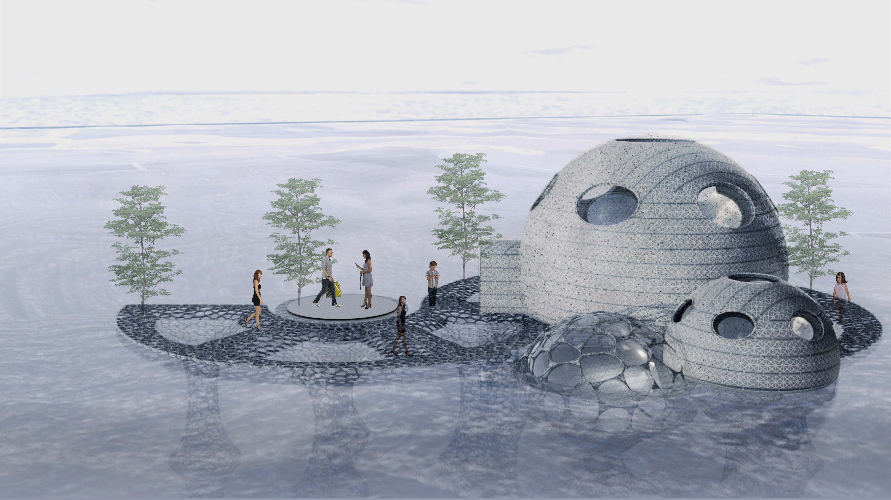

Poole Pavilion is an interactive space located on the water on the coastline of Poole for visitors to view the local marine environment. Upcycled from abandoned boats, Poole Pavilion aims to provide a glimpse into what the future of coastal cities could look like.
PART 1: RESEARCH
Our research consisted of desk research, an interview with a Royal National Lifeboat Institution employee, and a day trip to Poole. Poole is home of RNLI headquarters and Europe’s largest natural harbour with numerous rare and endangered species. However, like any other town, it faces challenges: economic dependency on seasonal tourism, environmentally-detrimental boat disposal practices, and social tension between generations of residents.
Our visit drove us to highlight and celebrate aspects of Poole, such as its strong community, rather than solely find ways to fix it. We were driven by 4 main insights:
The boat graveyard near residential spaces on Poole’s coastline promotes littering habits as the space is filled with clothes, bottles, cans, metal water, and plastic bins.
Community is important to Poole, but there is tension between the older and younger residents.
There is a general practice of sustainability and ocean protection.
Tourism is the primary source of Poole’s economy, but shops are closed during the off season.


PART 2: UPCYCLING ABANDONED BOAT FIBREGLASS
This multi-story building is upcycled from the many abandoned boats on the coastline that are not only an environmental hazard, but also encourage littering. Fibreglass in the boats can be transformed to cement in a way that is similar to upcycling wind turbines. Processing the fibreglass in these boats yields a material that can be used to create cement, which can then be turned into concrete. Such fibre-reinforced concrete is commonly used for artificial reef due to its added strength and erosion resistance. This concrete will then be 3D printed into a building, providing an example of a marine friendly, regenerative structure that invites fish and local wildlife to interact with it.

(Initial sketches)


(3D print)
PART 3: INTERACTIVE ACTIVITIES
With a majority of their 3 million tourists visiting in the summer, many shops and restaurants are closed during other parts of the year. Poole Pavilion hopes to support alternative sources of revenue through aquaculture by growing mussels, clams, oysters, and seaweed beneath it to be used in a range of applications from raw material development to food. Visitors can go scuba diving to view the aquaculture. The Pavilion includes a farm to table restaurant, giving visitors a flavour of their aquaculture dishes.
Poole’s local history is intertwined with the RNLI’s, and both have extremely strong multi-generational communities of residents, donors, and volunteers. Poole Pavilion bridges the gap between these generations and introduces tourists to their volunteers’ work through the RNLI game. Players will receive calls on a toy pager, race to put on their gear and helmets, and drive out in a digital game to save those lost at sea. Additional games provide crabbing experiences for families without harming crabs or the beautiful coast.
Lastly, Poole Pavilion hopes to educate its visitors on its large variety of marine species with the Natural History Museum and the UK Species Inventory. Visitors can use a digital experience to earn rewards for identifying species with image recognition. This app can be used outside of Poole Pavilion, and utilises a reward system to encourage visitors to complete all the activities and continue exploring.
In this project, we researched, strategized, and designed an interactive space to celebrate Poole’s local history and culture, while fulfilling the UN’s three pillars of sustainability: environmental, economic, and social. Poole Pavilion serves to connect multiple generations by redefining play, expand marine and ecosystem research, and bridge the gap between its history and future potential. More broadly, it aims to provide a glimpse into what the future of coastal cities could look like - bridging human and marine life to live with mutual respect, and creating spaces for coastal communities to celebrate their uniqueness.
Poole Pavilion was shortlisted in the top 12 out of 97 teams, and featured in the Royal College of Art’s 2023 Grand Challenge: Engaging Communities for Generating Marine Sustainable Economies exhibition from March 9th-14th. View more here.
→ Winter 2023 (5 Weeks)
→ Grand Challenge
→ Instructors: Neil Musson, John Stevens
→ Collaborators: Eulalie Mathieu, Zhiran Song, Dan Xiong
→ View more about the Grand Challenge here